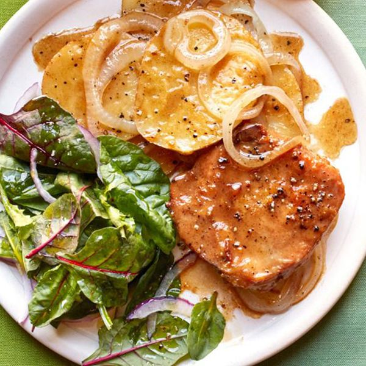

Home
Skillet Pork Chops with Potatoes and Onion

Description
A great cold-weather dish that takes little prep time and yields tender chops. This meal is not only full of flavor
but immensely satisfying and can easily serve 4 people.
Easy to make and simply delightful, it will leave your friends or family raving about your incredible cooking skills.
Serve hot to enjoy the pork chops at their best.
Ingredients
- 2 tablespoons vegetable oil
- 4 pork chops (1/2 inch thick), trimmed
- 2 tablespoons all-purpose flour
- ⅓ cup grated Parmesan cheese
- ½ teaspoon salt
- ¼ teaspoon pepper
- 4 Yukon Gold potatoes, thinly sliced
- 2 medium onions, sliced
- 3 cubes beef bouillon
- ¾ cup hot water
- 1 tablespoon lemon juice
Steps
- Heat oil in a large skillet over medium heat. Coat the pork chops with flour, and place in the skillet.
Brown about 4 minutes on each side.
- In a small bowl, mix the Parmesan cheese, salt, and pepper. Sprinkle 1/2 the Parmesan cheese mixture over the pork chops.
Layer chops with the potatoes. Sprinkle with remaining Parmesan cheese mixture. Top with onion slices.
- In a small bowl, dissolve the beef bouillon cubes in hot water. Stir in the lemon juice.
Pour over the layered pork chops.
- Cover skillet, and reduce heat. Simmer 40 minutes, until vegetables are tender and pork chops have reached an
internal temperature of 145 degrees F (63 degrees C).